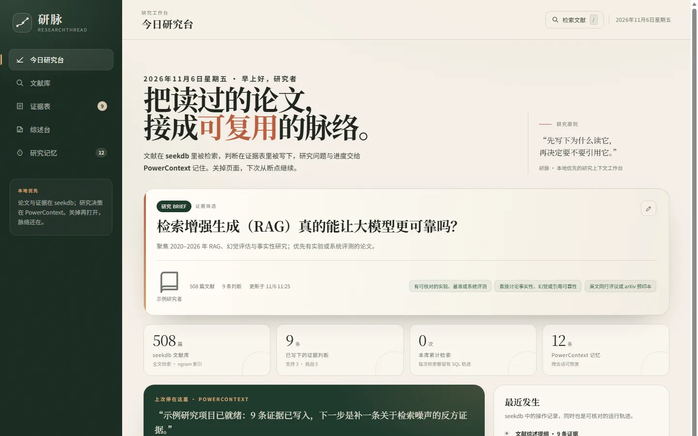
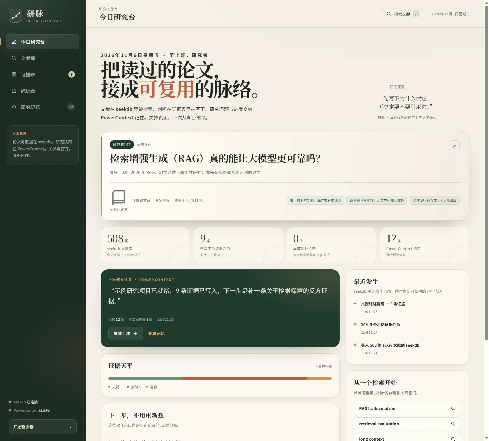
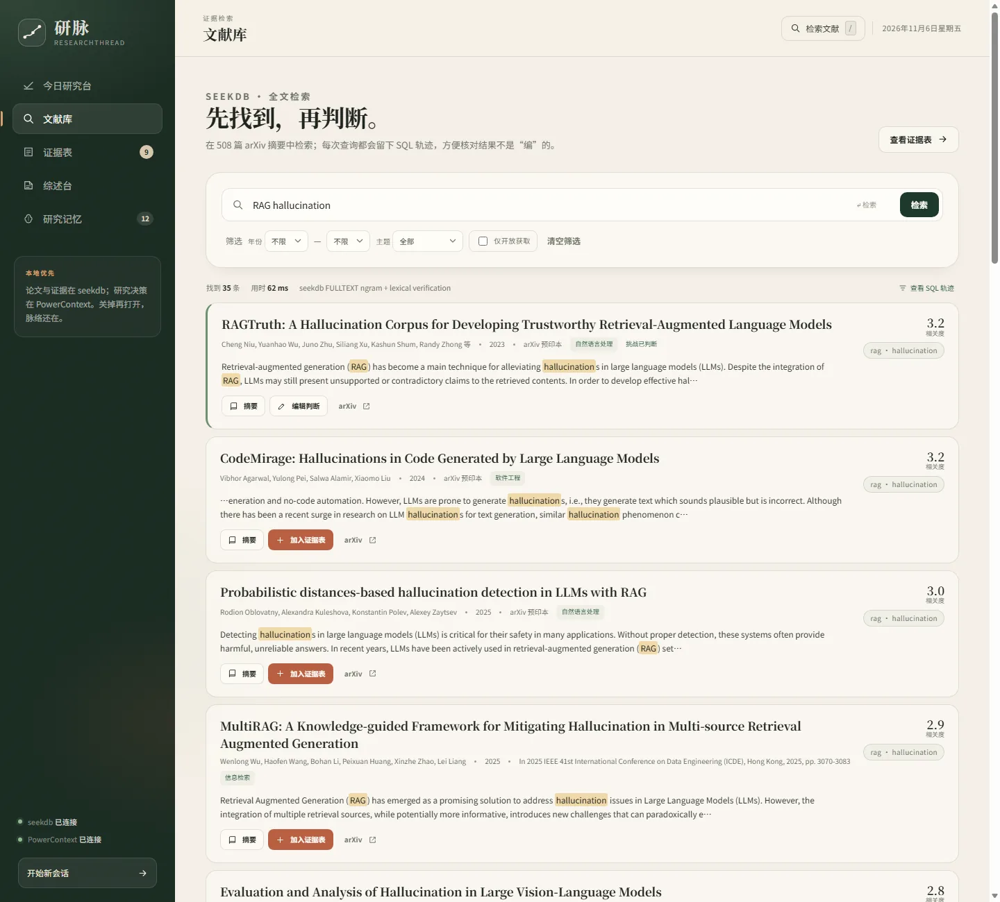
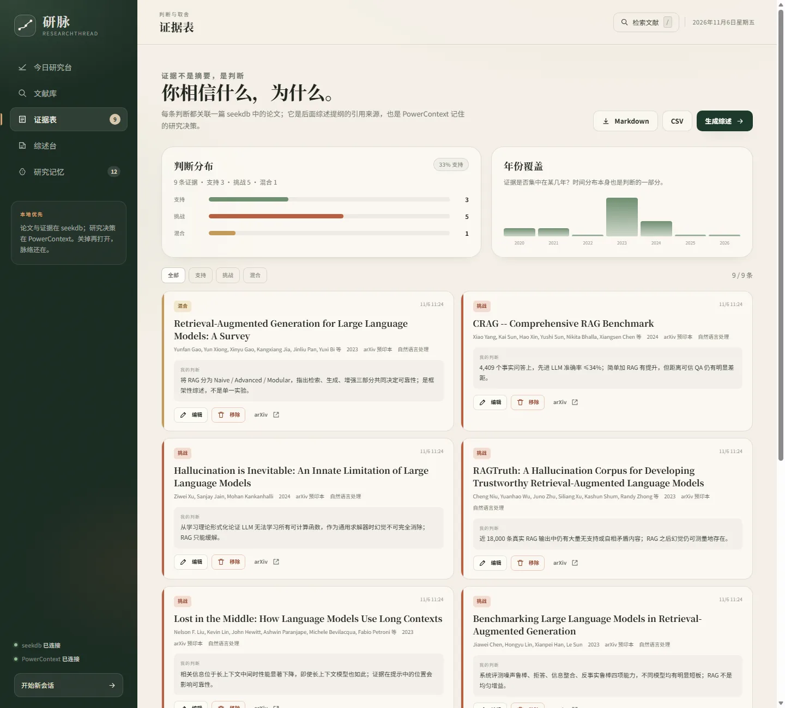
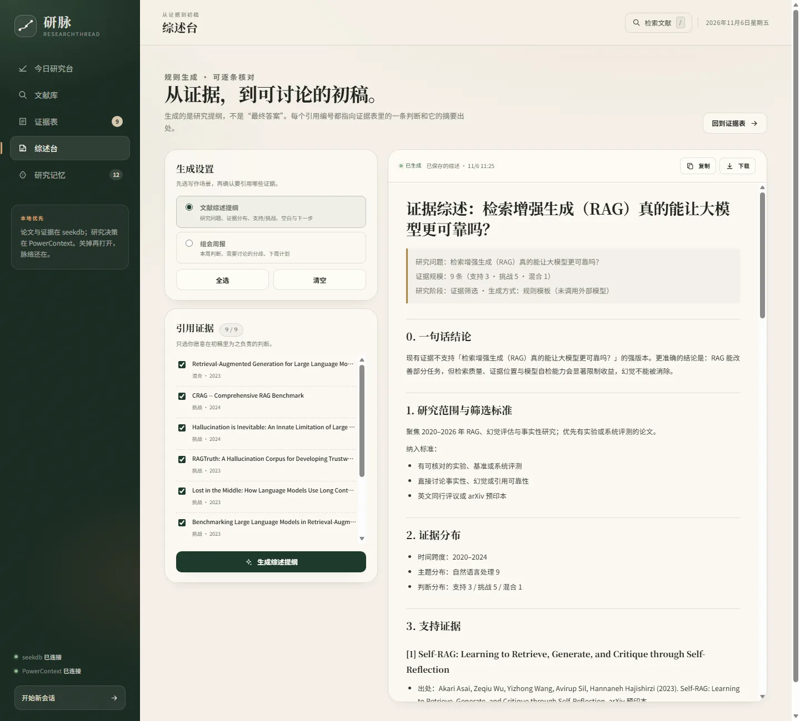
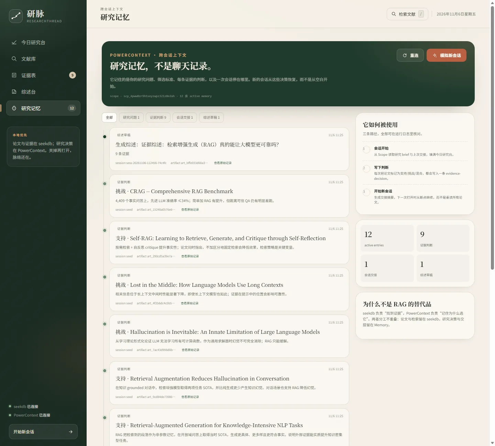

这篇我读过吗？
文献越存越多，检索却还是靠记忆。关键词搜出来一堆，没人告诉你哪篇真的相关。
Qoder × OceanBase 2026 · 科研提效
研脉是一个本地优先的科研阅读与证据工作台。seekdb 负责找到论文，PowerContext 负责记住你为什么留下它。检索、判断、综述、下次继续，形成一条可核对的闭环。

真实痛点
读过的论文、做过的判断、排除的理由，散落在 PDF、聊天记录和脑子里。下一次打开电脑，先花半小时重建上下文——这才是最重复、最耗时的部分。
文献越存越多，检索却还是靠记忆。关键词搜出来一堆，没人告诉你哪篇真的相关。
判断留在脑子里。换一个会话、换一台电脑，筛选标准和排除理由全部要重建。
笔记和引用对不上。写到讨论部分，才发现某条“共识”其实只有一篇摘要支持。
研脉不替你读论文。它替你保留判断的上下文。
看闭环如何工作 →一条研究闭环
从研究 brief 到综述初稿，每一步都留下可核对的记录。点击下面的标签，看真实运行截图。

Today
研究 brief、证据天平、上次会话摘要和下一步动作都在首屏。PowerContext 恢复 8 条记忆，不用从空白开始。

Library · seekdb
508 篇摘要走 seekdb 全文索引。每次查询都显示命中数、耗时和实际执行的 SQL；ngram 候选再经过词法核验。

Evidence
每条证据都带 stance、理由和论文出处。证据天平让“支持/挑战”的分布一眼可见，导出 Markdown/CSV 进入写作。

Synthesis
选择模板和证据，生成带 [n] 引用编号的 Markdown。规则模板不调用外部模型，每个引用都能回到摘要核对。

Memory · PowerContext
研究 brief、每条证据判断、综述事件与会话交接，按 Scope 存放。新会话先写摘要，再从记忆恢复。
不是功能清单，是取舍
先写“为什么支持/挑战”，再生成综述。没有证据的判断，不会出现在引用里。
每个 [n] 都对应一条证据、一篇摘要、一个 arXiv 链接。文末明确标注生成方式。
PowerContext 记住 brief、判断理由与交接。刷新、重启、换会话，研究脉络还在。
不需要上传 PDF、不需要 API Key。seekdb 与 PowerContext 都在本机，数据留在自己的电脑上。
技术结合
不是“装了两个组件”，而是让 seekdb 与 PowerContext 在同一个用户动作里分工：一个找证据，一个记决策。
508 篇 arXiv 摘要；`FULLTEXT INDEX ... WITH PARSER ngram`；每次查询都写入 search_log，UI 可展开实际 SQL。
SELECT paper_id, title, abstract,
MATCH(title, abstract)
AGAINST ('rag hallucination') AS fts_score
FROM papers
WHERE MATCH(title, abstract)
AGAINST ('rag hallucination')
ORDER BY fts_score DESC, pub_year DESC
LIMIT 160;研究 brief、证据判断、综述事件、会话交接，写入独立 Scope。它不是论文库，不复制正文，只保存决策上下文。
{
"kind": "evidence-decision",
"summary": "挑战 · RAGTruth: A Hallucination Corpus…",
"payload": {
"stance": "challenge",
"paper_id": 487,
"note": "RAG 之后幻觉仍可测量地存在。"
},
"artifact_id": "art_e860088e9c054715ab8ec67f8a8ec792"
}可复跑
一条验收命令覆盖：seekdb 播种、全文检索、证据写入、综述生成、PowerContext 记忆与跨会话交接。下面是本机实测。
[PASS] seekdb 可用且已播种 — papers=508
[PASS] PowerContext 可用
[PASS] 全文检索命中 — total=35
[PASS] 检索结果由 seekdb 驱动
[PASS] 相关度排序把 RAGTruth 放在前列
[PASS] 证据写入 seekdb
[PASS] 综述包含「## 3. 支持证据」
[PASS] 综述写入 PowerContext
[PASS] 记忆数量增加 — 13 → 14
[PASS] 新会话生成交接摘要
[PASS] 存在会话交接记录
验收通过。RAG hallucinationRAGTruth 在前 5，SQL 含 MATCH通过运行
首次启动会自动拉起 seekdb 与 PowerContext，播种 508 篇文献 + 9 条证据。需要 Python 3.12；Windows 推荐，Linux/macOS 走嵌入式 seekdb。
# 1. 安装
cd qoder
powershell -ExecutionPolicy Bypass -File scripts\setup.ps1
# 2. 启动（自动拉起 seekdb + PowerContext）
powershell -ExecutionPolicy Bypass -File scripts\run.ps1
# 3. 打开
http://127.0.0.1:8787Qoder × OceanBase
Qoder 是项目的主要开发环境。提交材料包含 Qoder 账号 UID、关键会话截图、修改文件与验证输出；网站发布后可在 Qoder Sites 访问。
从“文献读了就忘”拆成 brief、检索、证据、综述、交接五个动作。
seekdb 服务启动、ngram 检索、证据写入、PowerContext 记忆与会话恢复。
集成验收 + 单元测试 + 真实截图；每个 PASS 都能对应到页面或接口。
Qoder Sites 发布静态网站，设置为任何人都可访问，提交前用无痕窗口复核。